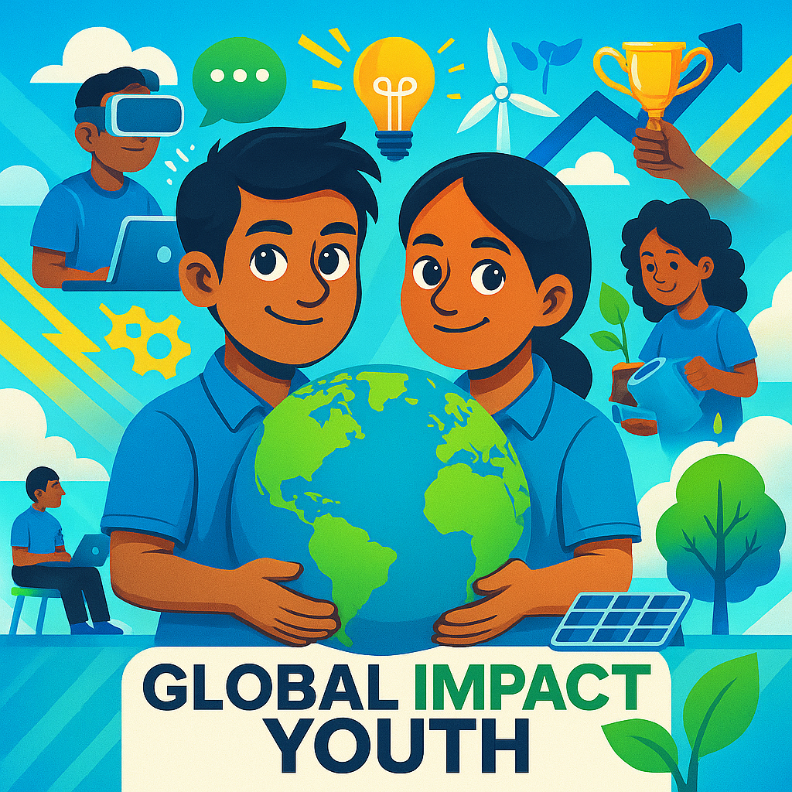

Technology • Sustainability • Communication • Volunteering • Leadership • Critical Thinking

The Global Impact Youth Club (GIY) is a youth-led initiative founded in Ethiopia with the mission of empowering young people to become active drivers of positive change. GIY is more than just a club — it is a movement where passionate and creative youth come together to learn, lead, and act on issues that matter most to their communities and to the world. We believe that young people are not just the leaders of tomorrow, but also changemakers today, and we provide them with the skills, opportunities, and platforms they need to thrive.